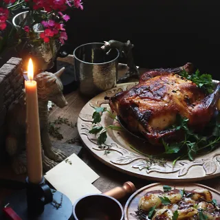

Honeyed chicken

A recipe for honeyed chicken inspired by the book series, Game of Thrones from A song of Ice and Fire.
Ingredients
- 1 - 5 # chicken giblets removed
- salt and pepper as needed
- zest of one orange
- juice of half an orange
- 2 tsp - dried fennel
- 1/3 cup - honey
- 2 tbsp - unsalted butter room temperature
- handful of parsley
- Preheat the oven to 375F.
- Remove the giblets and any excess fat from the chicken. Make sure the bird is thoroughly dry by patting the inside and outside dry with a towel. Rub the softened butter on the skin and under.
- Combine the honey, zest, fennel, and orange juice. Brush the mixture over the chicken. I made sure to add a bit of the mixture inside the cavity and underneath the skin. Season generously with salt and pepper.
- Place the orange rind in the cavity of the bird along with a handful of parsley.
- Roast the bird until golden brown for approximately 1 hour. The internal temperature reaches 165F. Let it rest for 10-15 minutes before slicing.